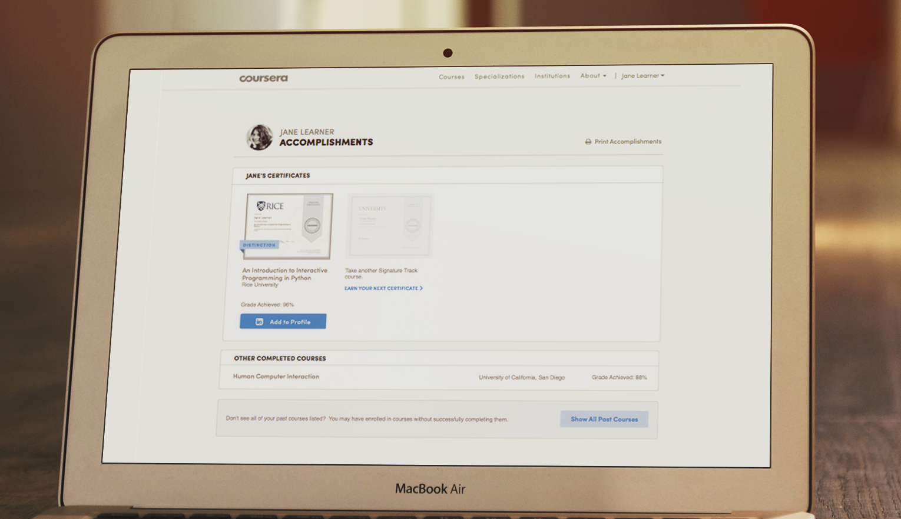
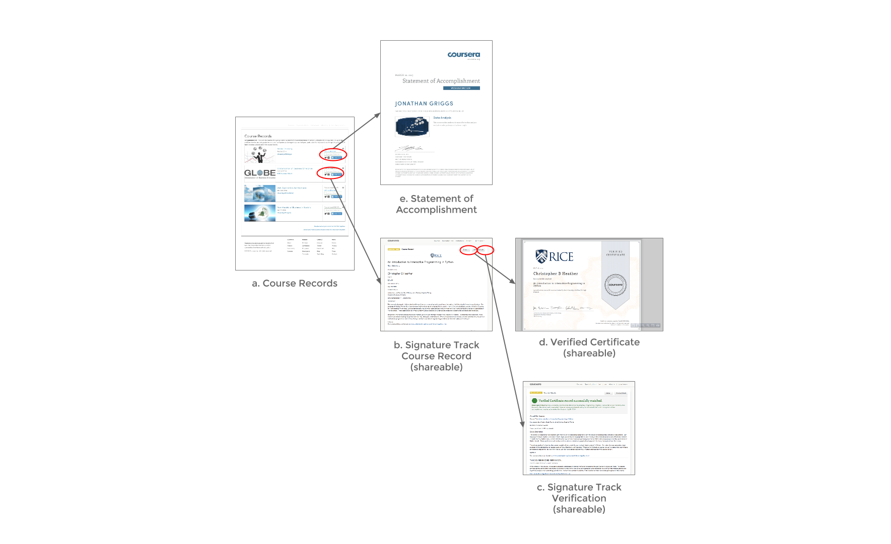
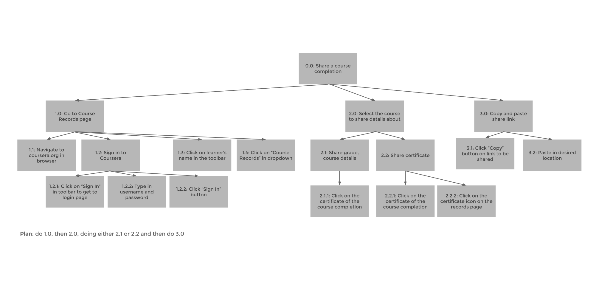
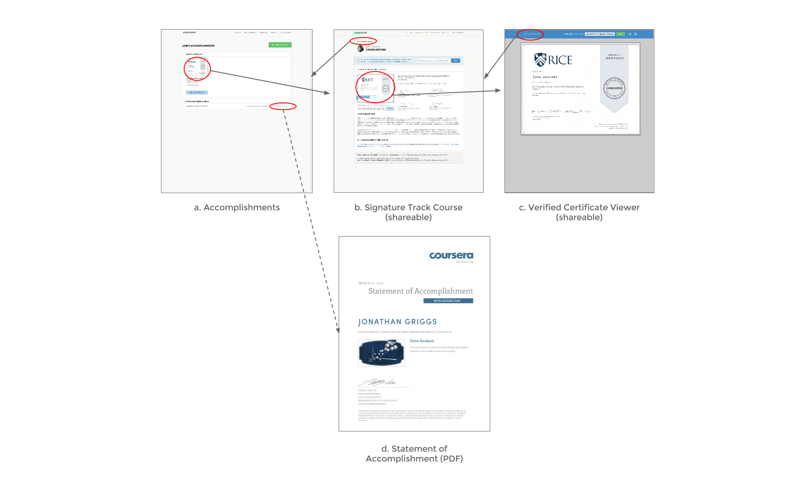

Role
I led this project at Coursera, and worked as the primary designer and developer on it before I ended my internship. I also worked with a product manager, and my mentor to develop the business requirements and the engineering specifications for fleshing it out.
Context
The motivation for this design was to increase the value of the Verified Certificate and provide a personal space dedicated to learners on Coursera to view their accomplishments, and share them with their employers and peers. The design was validated through A/B testing and user testing with design walkthroughs.
User mindset and motivation (Why would a user come here, and how would they feel?!):
- Completed a course, want to review their achievement
- Exploratory - "What is this 'Accomplishments' doo-hicky?!"
Key tasks they want to complete:
- See their completed courses
- Access the artifacts stored from the courses they've completed
- Share their accomplishments with employers (current or potential) - this has high value based on user testing
Emotional pay-off
- What would a user say when everything went well? About their own Accomplishments?
- "I'm proud of all of my accomplishments"
- "I wish I had more accomplishments to display"
- What might they say about Coursera?
- "Coursera offers credentials I can share with others in ways I wouldn't with a traditional education"
- "Coursera is easy to use and convenient"
- What should we anticipate they would want to do right after this?
- Sign-up for additional courses
- Share their certificate or course record
Existing Solution
Prior to the redesign, learners had the capability of sharing their course completions, but many learners were not aware that they were able to do this. The following diagram shows the flow of the pages in existence, and how they were accessed. Views labeled "shareable" notes that these custom pages could be viewed by anyone with the URL.
Here's an original task analysis of the decided flow of sharing a course completion with someone else, say and employer (current or potential):

Based on the task analysis, we found it possible to simplify the flow into four views - combining the Course Record and Verification pages, as shown in the below diagram:

User Testing
With a high-fidelity mockup inVision mockup, we performed user testing through UserTesting.com with five participants, as well as two participants internally to gauge directional feedback and pain points in the design. Here's what we found:
- Participants referred to the page colloquially as their "Profile", suggesting that it would be worth exploring the expansion of this page to be a social profile
- Participants intuitively clicked on certificate thumbnails to find what they were looking for, as opposed to text links
- They emphasized the value of LinkedIn sharing in their verbal feedback
- Participants found that the section that stated "Other Completed Courses" lacked detail in comparison to their Verified Certificate courses
- There was confusion around the number of shareable URLs and where they were placed
From prior A/B tests that we ran across the site's paid products, we also found that learners were motivated by the idea of linking their identity to their learning, which influenced the voice behind some of the copy in the Accomplishments page.